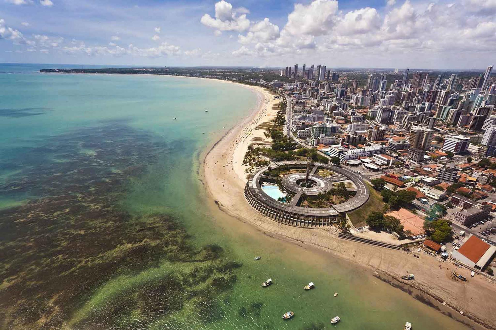
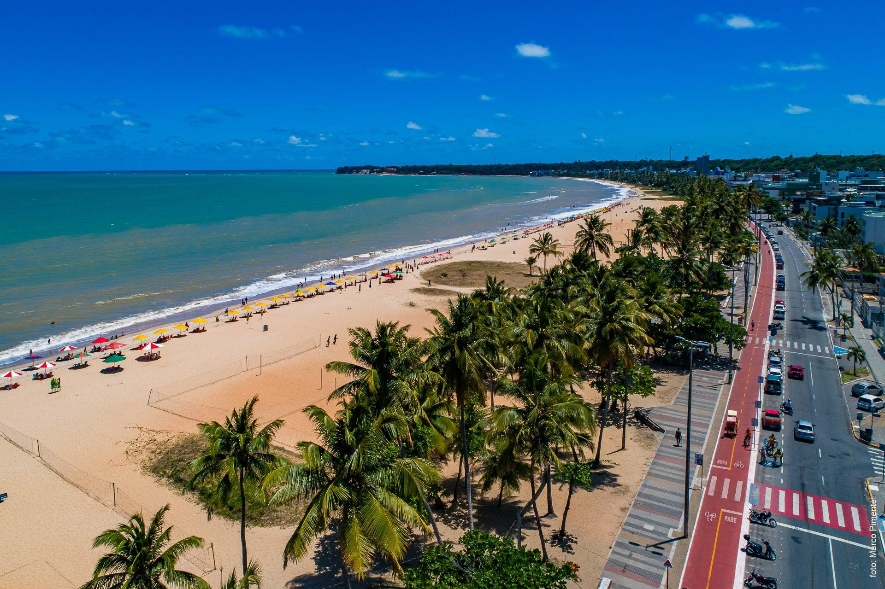
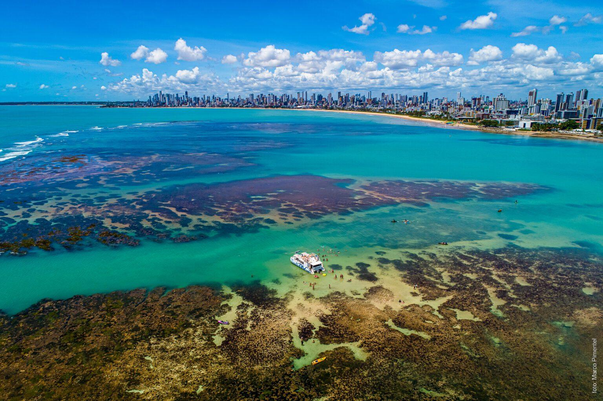
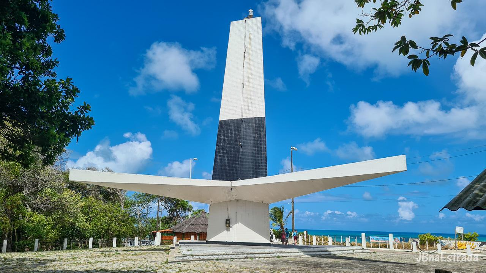
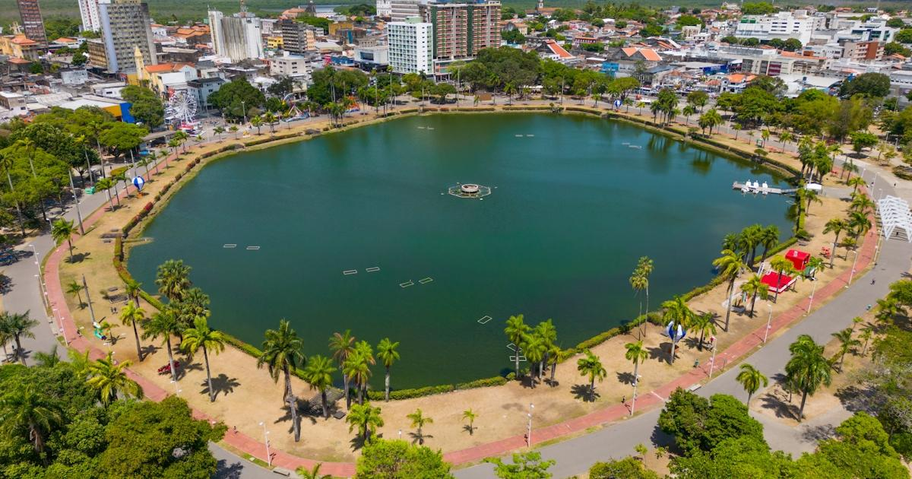
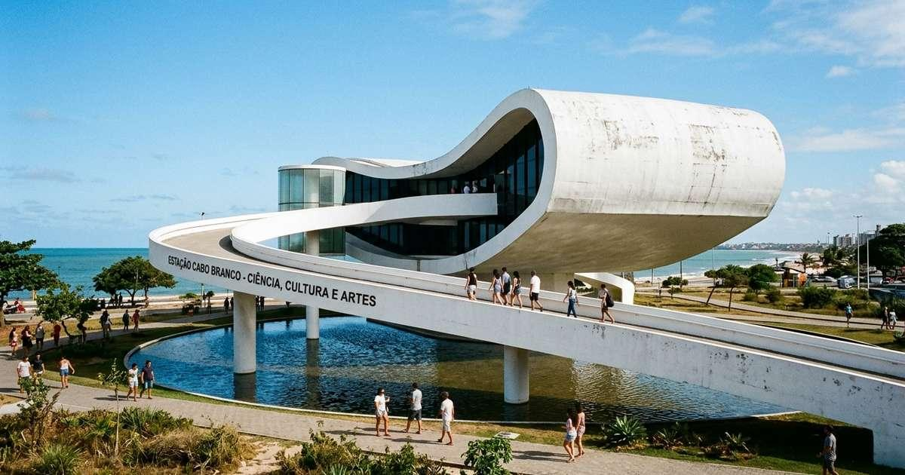

1585
Ano de fundação
Entre praias paradisíacas, paisagens naturais, história e cultura, conheça tudo o que a capital paraibana tem a oferecer.
Explore nossos destinosFundada em 5 de agosto de 1585, João Pessoa é a capital do estado da Paraíba e uma das cidades mais antigas do Brasil.
Conhecida pelas suas belezas naturais, praias, patrimônio histórico e riqueza cultural, a cidade reúne tradição e modernidade.
João Pessoa também abriga a Ponta do Seixas, o ponto mais oriental das Américas continentais.

Ano de fundação
Estado brasileiro
Região do Brasil
Descubra algumas das praias mais encantadoras da capital paraibana.

Uma das praias mais conhecidas de João Pessoa, com uma orla movimentada, restaurantes, feiras de artesanato e opções de lazer.

Conhecida por sua beleza natural e extensa faixa de areia, é ideal para caminhadas, atividades físicas e momentos de descanso.

Com águas geralmente tranquilas e belas paisagens, é uma excelente opção para quem busca relaxamento e contato com a natureza.

Localizada nas proximidades do ponto mais oriental das Américas continentais, destaca-se por suas paisagens e piscinas naturais.
Conheça os principais pontos turísticos e descubra a riqueza histórica, cultural e natural da cidade.

Um dos principais cartões-postais de João Pessoa, localizado sobre uma falésia e cercado por belas paisagens naturais.

Reúne construções antigas, igrejas, praças e monumentos que preservam a história e a identidade cultural da capital paraibana.

Popularmente conhecido como Lagoa, é um importante espaço de convivência, lazer e contemplação no centro da cidade.

Projetada pelo arquiteto Oscar Niemeyer, a estação é um espaço dedicado à ciência, à cultura, à arte e à educação.
Descubra os sabores da culinária paraibana.
Entre em contato conosco.